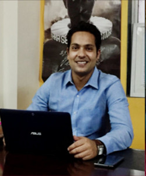

Who We Are
Mission
- Utilization of ‘Knowledge & Media’ as a key to Development Activities
- Taking cause campaign beyond advocacy, converting it in real time solutions
- Promotion of social businesses that are impact driven, sustainable and innovative
- Focusing incubation projects on ‘grant based’ but its expansion through ‘revenue generation’
- Creating consortium of development institutions and individuals from South Asia, Africa and Latin America
- Supporting partners, clients and entrepreneurs with projects, resources and avenues for larger social causes
Vision
“Redefining and broadening development sector in emerging economies through multi-stakeholders, interdisciplinary and action research orientation.’’
Our History
Idiog Consultancy Services LLP is a knowledge and media consultancy firm started by a group of development professionals to reach out to emerging and existing players across sectors. Idiog started with the objective to curate and promote innovation within the development sector and also support skill and knowledge upgradation of existing organisation.
Testimonials
"My experience at Idiog was very gratifying. I was able to make a research about CSR in India while receiving great input from the members of Idiog team. This allowed me to combine theoretical knowledge with more pragmatic experience. Additionally, coming from a law background, it was an enriching experience to participate at Idiog's meetings, in which participants had different backgrounds and were able to give a holistic approach to problems. A plus for this experience was living in India; a fascinating country that left me with amazing mind-blowing anecdotes."
Daniela Sota Valdivia, DAAD Scholar Willy Brandt School of Public Policy
"Having come from different disciplines such as History, Engineering and actuarial sciences, Bargad has been the best platform for all our skills to come together. Ideating Bargad from scratch, we found ourselves amidst the most diverse and eclectic mix of professionals who have come from the best institutions of the country. It is truly a project that has been conceptualised way ahead of its time, and is steadily making an impact."
Vivek Lohia, Snigdha Peruri and Gnana Suthan (From left to right)
Our Team
-

Kartikey Shukla
Mr. Shukla attended TISS, Lund University (Sweden), Wits University (South Africa) and Young India Fellowship. He worked as a communication & media consultant with World Bank, British High Commission, and Ashoka University. His interests lie in career development, new skills innovation, and human resource lab. -
Neha Rane
Neha is an economist and public policy practitioner by profession, she is an alumnus of Mumbai University and Jindal School of Public Policy. She has worked with TCS as a Business Analyst, Researcher with Mani Shankar Aiyer and organised thought leadership summits in the development sector. She's leading Idiog's Mumbai office. Her interests lie in Microfinance, Urban Policy, and Governance. -
Sudipt Anand
He did BTech from BITS, Ranchi and holds PG degrees in Social Sciences from TISS Mumbai and IIT Mumbai. Previously he has been associated with Center for knowledge Societies (CKS), New Delhi Institute of Rural Management Anand (IRMA). -

Vineet Pandey
-
Sushmitha Ramoji
With a B.Tech in Planning from SPA - Hyderabad, and Masters in Public Policy from Jindal School of Government and Public Policy. Sushmitha's skills lie in analysing urban policy framework. She has a solid background in urban policy research and analysis as she has been associated with IIHS, ASCI, SACI-waters. She's leading the Urbania team in Hyderabad. -

Kamla Kanta Dash
He is Master Trainer in Life Skills, Soft and Leadership Skills. Mr Dash has studied and worked in Delhi and Melbourne in areas of public policy, community engagement, interfaith dialogue and skills training. He has more than 17 years of experience of doing research, consulting and advocacy in development and academic sectors. -
Abhishek Masurkar
His interests lie in the area of urban planning, sustainability, governance and public policy and he has also conducted quite a few researches in the mentioned area as well. Abhishek holds a Bachelors degree in Management from the University of Mumbai and a Master of Arts degree in Economics from the Mumbai School of Economics and Public Policy. -

Itesh Dubey
Itesh completed engineering from UPES, Dehradun. He is the team leader for Northern Belt. His interest lies in aptitude, liberal arts, approach based problem solving and systematic approach. His core competency lies in GIS mapping and he'll be taking up the research project for the same. -
Sonika Jha
She is an alumna of Amity University with majors in Bachelors of Information and Technology. Her interests and skills lie in project management, liaising and corporate communication. -
Harshit Sharma
He is a Design undergraduate from IIT Guwahati. Under Urbania, he curates technological solutions for urban governance problems.
{kind=link}
{kind=link}
{kind=link}
{kind=link}
{kind=link}
{kind=link}
{kind=link}